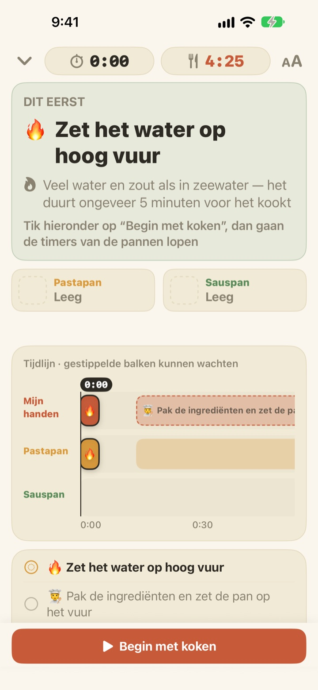
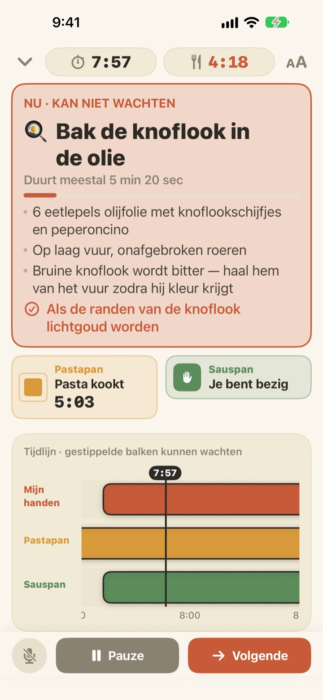
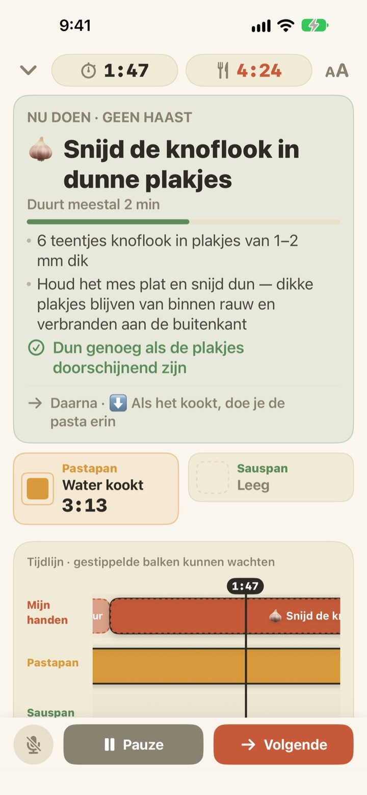
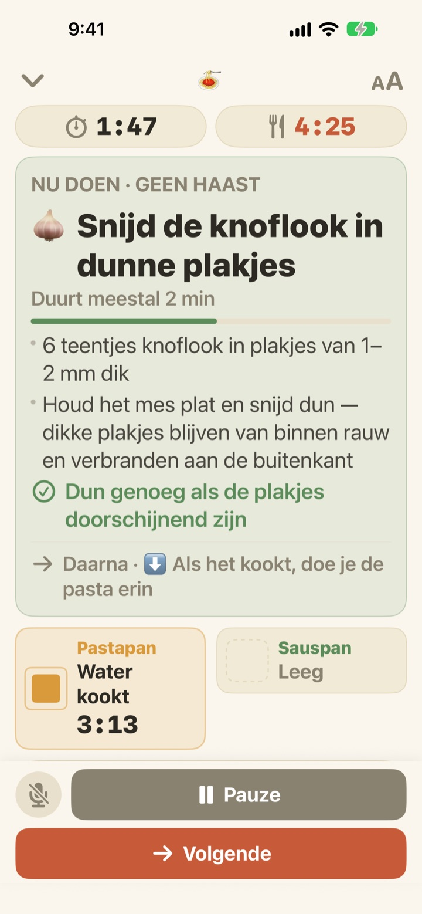

De pasta kookt.
Intussen is de saus ook klaar.
Als twee pannen op een ander tempo gaan, laat Geusaie groot zien wat je handen nu moeten doen. De saus wordt teruggerekend vanaf het moment dat de pasta uit het water komt.
Alle functies zijn gratis. Geen account nodig.

Probeer het
Kook een pan aglio e olio op 20x snelheid. Tik op ‘Begin met koken’ en daarna op ‘Volgende’ telkens als je een taak af zou hebben. Kijk hoe de kaart verandert als de pasta moet worden afgegoten.
Drie timers aan en toch een papperige pasta?
Een timer voor de pasta, een voor de saus en de knoflook in je hoofd, en ineens weet je niet meer wat eerst moet. Je staat te snijden als de pasta moet worden afgegoten, en de saus is twee minuten te laat. Geusaie kent het recept als ‘eerst dit, dan dat’ en vertelt je alleen wat je nu moet doen.
Wat niet kan wachten, kleurt rood
Pasta afgieten, knoflook die bijna aanbrandt: als een taak het gerecht verpest zodra hij uitloopt, wordt de kaart terracotta en zegt hij dat je het snijwerk even moet laten liggen.
Is een pan klaar, dan krijg je een melding, ook als je niet kijkt, met wat je meteen moet doen.

Snijden als je handen vrij zijn
Knoflook snijden, kaas raspen, afwegen: daar hangt geen klok aan, dus Geusaie telt hier geen seconden af. De balk loopt vol zolang je handen vrij zijn, pauzeert als een pan je nodig heeft en gaat verder waar je gebleven was.
Zet je het vuur drie minuten later aan, dan schuift alles daarna drie minuten op. De planning wordt steeds opnieuw berekend op basis van wat je echt hebt gedaan.

Op het aanrecht zetten, met je stem verder
Vier tekstgroottes, zodat je het op een stap of twee afstand nog kunt lezen, en het scherm blijft aan terwijl je kookt.
Natte handen? Zeg volgende en de app gaat door naar de volgende taak zonder dat je iets aanraakt.

In drie stappen aan tafel
- 1
Kies een gerecht
Je ziet ongeveer hoelang het duurt en hoeveel pannen je nodig hebt.
- 2
Tik op ‘Begin met koken’
Eerst zie je je eerste taak. Vanaf het tikken lopen de klokken van de pannen.
- 3
Klaar? Volgende.
Tik op de knop of zeg ‘volgende’ en je volgende taak verschijnt.
De kleur laat zien hoe dringend het is
- Groen
- Voorbereiding. Neem je tijd.
- Mosterdgeel
- Een pan heeft je nodig. Nu doen, maar zonder haast.
- Terracotta
- Wacht je, dan wordt de pasta papperig of verbrandt de knoflook. Nu doen.
- Panvakken
- Het krimpende vierkant is de resterende tijd. De tijd van de pannen wordt nooit verborgen.
Op de tijdlijn zijn gestippelde balken taken die kunnen wachten.
Alle functies zijn gratis
Gratis
- Beide recepten
- Een timer per pan en de volledige tijdlijn
- Een melding als een pan klaar is
- ‘Volgende’ met je stem
- Vier tekstgroottes
- Een recept openen met Siri of Opdrachten
Steun de ontwikkelaar (optioneel)
- Helpt de app je, dan kun je via Instellingen een kleine fooi geven
- Een fooi ontgrendelt niets. Ook zonder blijven alle functies van jou
Losse fooien, geen abonnement.
Geen account, geen advertenties, en het werkt zonder internet.
Veelgestelde vragen
Ik zeg ‘volgende’ maar er gebeurt niets.
De microfoonknop linksonder is rood terwijl de app luistert en grijs als hij uit staat. Sta de eerste keer zowel de microfoon als spraakherkenning toe. Heb je geweigerd, zet ze dan weer aan via Instellingen > Geusaie. De app luistert naar het woord op de knop Volgende. In een heel lawaaiige keuken tik je gewoon op ‘Volgende’.
Een pan was klaar, maar ik kreeg geen melding.
Controleer of meldingen aanstaan via Instellingen > Berichtgeving > Geusaie. Een focus kan ze dempen. Meldingen komen alleen als een pan klaar is; bij de voorbereiding word je nooit opgejaagd.
Wat gebeurt er met de planning als ik later begin?
Die wordt opnieuw berekend op basis van wat je echt hebt gedaan. Zet je het vuur drie minuten later aan, dan schuift alles daarna drie minuten op, en de saus blijft teruggerekend vanaf het moment dat de pasta klaar is.
De tekst is te klein.
Tik op het kookscherm rechtsboven op de knop voor tekstgrootte en kies Normaal, Groot, Groter of Grootst. Je keuze wordt onthouden.
Gaat het scherm uit tijdens het koken?
Nee. Het scherm blijft aan zolang je kookt, zodat je het nooit met natte handen hoeft aan te raken.
Welke gerechten zitten erin?
Aglio e olio (ongeveer 15 minuten, 2 pannen) en pasta in tomatenroomsaus (ongeveer 20 minuten, 2 pannen), gebaseerd op recepten van Serious Eats, Gimme Some Oven, RecipeTin Eats en The Burnt Butter Table. Elk gerecht met twee pannen tegelijk past goed, dus laat ons weten wat je graag zou zien.
Wordt mijn stem opgenomen?
Nee. De app luistert alleen naar het woord ‘volgende’ en neemt niets op en bewaart geen geluid. Als je apparaat het ondersteunt, gebeurt de spraakherkenning op het apparaat zelf. Er worden geen persoonsgegevens verzameld.
Kan ik de app openen met Siri?
Ja. Kies een gerecht in Siri of de Opdrachten-app en het kookscherm opent meteen. De klokken starten pas als je op ‘Begin met koken’ tikt, zodra je klaar bent om het water op te zetten.
Op welke apparaten werkt de app?
Op iPhone en iPad met iOS 17 of nieuwer. Geen account of internetverbinding nodig.
Hoe meld ik een probleem of stel ik een recept voor?
Via Instellingen > Stuur feedback in de app, of mail naar het adres hieronder. Met je apparaatmodel en iOS-versie kunnen we het sneller bekijken. We antwoorden meestal binnen een paar dagen.
Loop je ergens vast, zie je iets vreemds of heb je een recept in gedachten? Schrijf naar leeo@kakao.com.